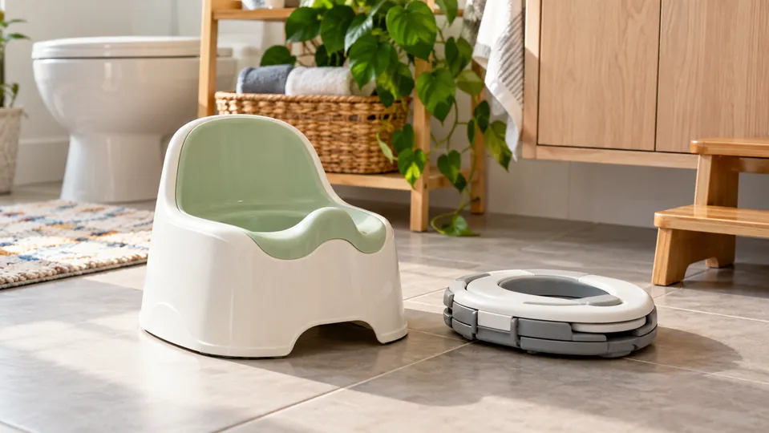

Helpful Gear
A home potty or a travel potty?
Choose around where you’ll use it, how it fits your child, and what cleanup works for you.
These are researched product reviews based on manufacturer information, not hands-on tests. Product links currently go directly to the manufacturer; this blog does not earn a commission from them.

Quick Answer
BabyBjörn Smart Potty and OXO Go Potty: useful features, cleanup, and tradeoffs.
Three Practical Steps
- Start with your child’s age and your household’s needs before comparing features.
- Check the manufacturer’s current instructions, cleaning guidance, and any age restrictions.
- Choose one useful feature for your routine and review the linked product information before buying.
BabyBjörn Smart Potty
Useful features: Removable inner bowl, splashguard, and a compact design are useful features for straightforward cleanup.
Consider before buying: It is still a separate potty to empty and clean. Check fit and stability with your child before committing.
Our take: a sensible option for families wanting a simple floor potty; the compact footprint is its main appeal.
View product & current priceSource: manufacturer product page · checked October 4, 2026.
OXO Tot 2-in-1 Go Potty
Useful features: Folding legs and a travel bag support portability. It works as a standalone potty with bags or as a toilet-top seat.
Consider before buying: Standalone use adds disposable-bag costs and waste. You need to check the setup and toilet fit every time.
Our take: the flexible travel setup is useful for outings; a fixed home potty may be simpler for everyday use.
View product & current priceSource: manufacturer product page · checked October 4, 2026.
Fit matters more than extras
A product does not make a child ready for toilet learning. Look for comfortable positioning, a stable setup, and cleaning you can keep up with. Follow the product instructions and supervise use.
Read the toilet-readiness guide or add a supported potty step to your routine.
What’s your little win?
Ask for support, share what helped, or read other families’ experiences.
Join the Parent Club conversation